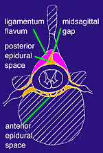

|
 AXIAL VIEW THROUGH A THORACIC VERTEBRA Failure of the two halves of the ligamentum flavum to fuse in the midline has resulted in a midsagittal gap. Separation of the of the anterior epidural space from the lateral spaces by connective tissue septa is absent. Dorsal root ganglia are visible in the intervertebral foramina. |